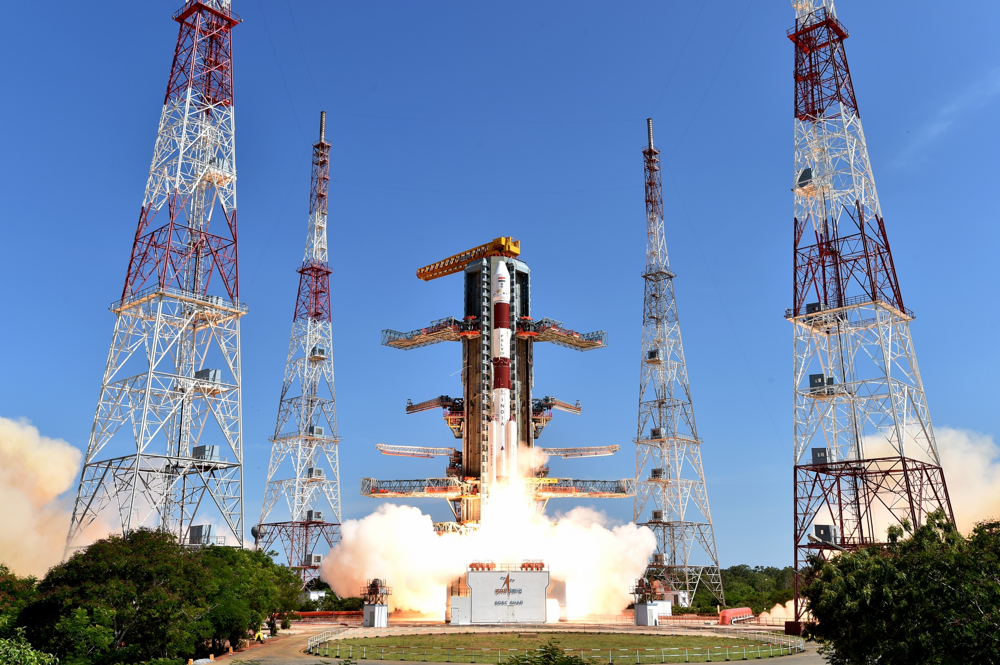

Polar Satellite Launch Vehicle (PSLV) is the third generation launch vehicle of India. It is the first Indian launch vehicle to be equipped with liquid stages. After its first successful launch in October 1994, PSLV emerged as the reliable and versatile workhorse launch vehicle of India with 39 consecutively successful missions by June 2017. During 1994-2017 period, the vehicle has launched 48 Indian satellites and 209 satellites for customers from abroad. Besides, the vehicle successfully launched two spacecraft – Chandrayaan-1 in 2008 and Mars Orbiter Spacecraft in 2013 – that later traveled to Moon and Mars respectively.
TECHNICAL SPECIFICATIONS
Payload to SSPO: 1,750 kg PSLV earned its title 'the Workhorse of ISRO' through consistently delivering various satellites to Low Earth Orbits, particularly the IRS series of satellites. It can take up to 1,750 kg of payload to Sun-Synchronous Polar Orbits of 600 km altitude.
Payload to Sub GTO: 1,425 kg Due to its unmatched reliability, PSLV has also been used to launch various satellites into Geosynchronous and Geostationary orbits, like satellites from the IRNSS constellation.
Fourth Stage: PS4 The PS4 is the uppermost stage of PSLV, comprising of two Earth storable liquid engines. Engine : 2 x PS-4 Fuel : MMH + MON Max. Thrust : 7.6 x 2 kN
Second Stage: PS2 PSLV uses an Earth storable liquid rocket engine for its second stage, know as the Vikas engine, developed by Liquid Propulsion Systems Centre. Engine : Vikas Fuel : UDMH + N2O4 Max. Thrust : 799 kN
First Stage: PS1 PSLV uses the S139 solid rocket motor that is augmented by 6 solid strap-on boosters. Engine : S139 Fuel : HTPB Max. Thrust : 4800 kN
Strap-on Motors PSLV uses 6 solid rocket strap-on motors to augment the thrust provided by the first stage in its PSLV-G and PSLV-XL variants. However, strap-ons are not used in the core alone version (PSLV-CA). Fuel : HTPB Max. Thrust : 719 kN
Geosynchronous Satellite Launch Vehicle Mark II (GSLV Mk II) is the largest launch vehicle developed by India, which is currently in operation. This fourth generation launch vehicle is a three stage vehicle with four liquid strap-ons. The indigenously developed cryogenic Upper Stage (CUS), which is flight proven, forms the third stage of GSLV Mk II. From January 2014, the vehicle has achieved four consecutive successes.
TECHNICAL SPECIFICATIONS
Payload to GTO: 2,500 kg GSLV's primary payloads are INSAT class of communication satellites that operate from Geostationary orbits and hence are placed in Geosynchronous Transfer Orbits by GSLV.
Payload to LEO: 5,000 kg Further, GSLV's capability of placing up to 5 tonnes in Low Earth Orbits broadens the scope of payloads from heavy satellites to multiple smaller satellites.
Third Stage: CUS Developed under the Cryogenic Upper Stage Project (CUSP), the CE-7.5 is India's first cryogenic engine, developed by the Liquid Propulsion Systems Centre. CE-7.5 has a staged combustion operating cycle. Fuel : LOX + LH2 Max. Thrust : 75 kN Burn-time : 720 sec
Second Stage: GS2 One Vikas engine is used in the second stage of GSLV. The stage was derived from the PS2 of PSLV where the Vikas engine has proved its reliability. Engine : Vikas Fuel : UDMH + N2O4 Max. Thrust : 800 kN Burntime : 150 sec
First Stage: GS1 The first stage of GSLV was also derived from the PSLV's PS1. The 138 tonne solid rocket motor is augmented by 4 liquid strap-ons. Engine : S139 Fuel : HTPB Max. Thrust : 4700 kN Burntime : 100 sec
Strap-on Motors The four liquid engine strap-ons used in GSLV are heavier derivatives of PSLV's PS2, and use one Vikas engine each. Fuel : UDMH + N2O4 Max. Thrust : 680 kN Burntime : 160 sec
Sounding rockets are one or two stage solid propellant rockets used for probing the upper atmospheric regions and for space research. They also serve as easily affordable platforms to test or prove prototypes of new components or subsystems intended for use in launch vehicles and satellites. With the establishment of the Thumba Equatorial Rocket Launching Station (TERLS) in 1963 at Thumba, a location close to the magnetic equator, there was a quantum jump in the scope for aeronomy and atmospheric sciences in India. The launch of the first sounding rocket from Thumba near Thiruvananthapuram, Kerala on 21 November 1963, marked the beginning of the Indian Space Programme . Sounding rockets made it possible to probe the atmosphere in situ using rocket-borne instrumentation. The first rockets were two-stage rockets imported from Russia (M-100) and France (Centaure). While the M-100 could carry a payload of 70 kg to an altitude of 85 km, the Centaure was capable of reaching 150 km with a payload of approximately 30 kg.
ISRO started launching indigenously made sounding rockets from 1965 and experience gained was of immense value in the mastering of solid propellant technology. In 1975, all sounding rocket activities were consolidated under the Rohini Sounding Rocket (RSR) Programme. RH-75, with a diameter of 75mm was the first truly Indian sounding rocket, which was followed by RH-100 and RH-125 rockets. The sounding rocket programme was the bedrock on which the edifice of launch vehicle technology in ISRO could be built. It is possible to conduct coordinated campaigns by simultaneously launching sounding rockets from different locations. It is also possible to launch several sounding rockets in a single day.